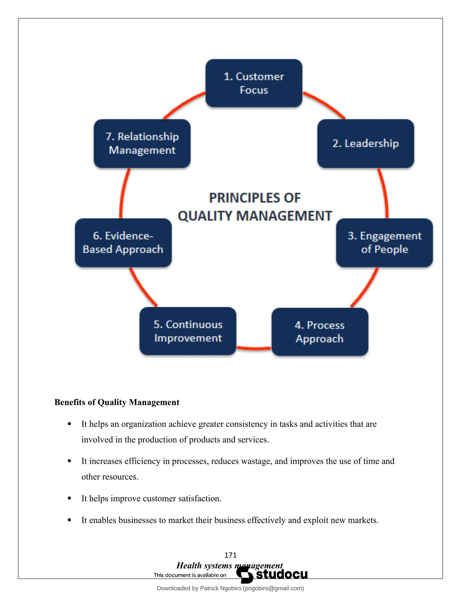

Chapter 9: Quality Assurance, Monitoring and Evaluation (Part 1)
CHAPTER NINE: QUALITY ASSURANCE, MONITORING AND EVALUATION
Quality assurance (QA) is any systematic process of determining whether a product or service meets specified requirements.
Quality Management
The act of overseeing different activities and tasks within an organization to ensure consistent delivery of products and services
What is Quality Management?
Quality management is the act of overseeing different activities and tasks within an organization to ensure that products and services offered, as well as the means used to provide them, are consistent. It helps to achieve and maintain a desired level of quality within the organization.
Quality management consists of four key components, which include the following:
- Quality Planning - The process of identifying the quality standards relevant to the project and deciding how to meet them.
- Quality Improvement - The purposeful change of a process to improve the confidence or reliability of the outcome.
- Quality Control - The continuing effort to uphold a process's integrity and reliability in achieving an outcome.
- Quality Assurance - The systematic or planned actions necessary to offer sufficient reliability so that a particular service or product will meet the specified requirements.
The aim of quality management is to ensure that all the organization's stakeholders work together to improve the company's processes, products, services, and culture to achieve the longterm success that stems from customer satisfaction.
The process of quality management involves a collection of guidelines that are developed by a team to ensure that the products and services that they produce are of the right standards or fit for a specified purpose.
- The process starts when the organization sets quality targets to be met and which are agreed upon with the customer.
- The organization then defines how the targets will be measured. It takes the actions that are required to measure quality. It then identifies any quality issues that arise and initiates improvements.
- The final step involves reporting the overall level of the quality achieved.
Principles of Quality Management
There are several principles of quality management that the International Standard for Quality Management adopts. These principles are used by top management to guide an organization's processes towards improved performance. They include:
1. Customer Focus
The primary focus of any organization should be to meet and exceed the customers' expectations and needs. When an organization can understand the customers' current and future needs and cater to them, that results in customer loyalty, which in turn increases revenue. The business is also able to identify new customer opportunities and satisfy them. When business processes are more efficient, quality is higher and more customers can be satisfied.
2. Leadership
Good leadership results in an organization's success. Great leadership establishes unity and purpose among the workforce and shareholders. Creating a thriving company culture provides an internal environment that allows employees to fully realize their potential and get actively involved in achieving company objectives. Leaders should involve the employees in setting clear organizational goals and objectives. This motivates employees, who may significantly improve their productivity and loyalty.
3. Engagement of People
Staff involvement is another fundamental principle. The management engages staff in creating and delivering value whether they are full-time, part-time, outsourced, or in-house. An organization should encourage the employees to constantly improve their skills and maintain consistency. This principle also involves empowering the employees, involving them in decision making and recognizing their achievements. When people are valued, they work to their best potential because it boosts their confidence and motivation. When employees are wholly involved, it makes them feel empowered and accountable for their actions.
4. Process Approach
The performance of an organization is crucial according to the process approach principle. The approach principle emphasizes achieving efficiency and effectiveness in the organizational processes. The approach entails an understanding that good processes result in improved consistency, quicker activities, reduced costs, waste removal, and continuous improvement. An organization is enhanced when leaders can manage and control the inputs and the outputs of an organization, as well as the processes used to produce the outputs.
5. Continuous Improvement
Every organization should come up with an objective to be actively involved in continuous improvement. Businesses that improve continually experience improved performance, organizational flexibility, and increased ability to embrace new opportunities. Businesses should be able to create new processes continually and adapt to new market situations.
6. Evidence-based Decision Making
Businesses should adopt a factual approach to decision-making. Businesses that make decisions based on verified and analyzed data have an improved understanding of the marketplace. They are able to perform tasks that produce desired results and justify their past decisions. Factual decision making is vital to help understand the cause-and-effect relationships of different things and explain potential unintended results and consequences.
7. Relationship Management
Relationship management is about creating mutually beneficial relations with suppliers and retailers. Different interested parties can impact a company's performance. The organization should manage the supply chain process well and promote the relationship between the organization and its suppliers to optimize their impact on the company's performance. When an organization manages its relationship with interested parties well, it is more likely to achieve sustained business collaboration and success.
Benefits of Quality Management
- It helps an organization achieve greater consistency in tasks and activities that are involved in the production of products and services.
- It increases efficiency in processes, reduces wastage, and improves the use of time and other resources.
- It helps improve customer satisfaction.
- It enables businesses to market their business effectively and exploit new markets.
- It makes it easier for businesses to integrate new employees, and thus helps businesses manage growth more seamlessly.
- It enables a business to continuously improve their products, processes, and systems.
METHODS FOR MEASURING SERVICE QUALITY
1. Post-service ratings
This is the practice of asking customers to rate the service right after it's been delivered. This is our favorite approach, because the memory of the service is still fresh and undiluted.
2. Follow-up surveys
With this method, you ask your customers to rate your service quality through an email survey for example via Google Forms . It has advantages and disadvantages compared to the postservice rating.
One advantage is that it gives your customer the time and space for more detailed responses.
It also provides a more holistic overview of your service. Instead of a case-by-case assessment, the follow-up survey measures your customers' overall opinion of your service.
But there are downsides as well. Such as the fact that the average person's inbox already looks more like a jungle than a French garden. Nobody's waiting for more emails especially those that don't promise any benefit for the recipient.
With a follow-up survey, the service experience will also be less fresh in mind. Your customers might have forgotten about the experience entirely, or they could confuse it with another experience.
3. In-app surveys
With an in-app survey, the questions are asked while the visitor is on the website or in the app, instead of after the service or via email. It can be one simple question - e.g. "How would you rate our service?" - or it could be a couple of questions.
4. Documentation analysis
With this qualitative approach you read through/listen to your written/recorded service records. Those doing this quality assurance then check whether the support agents took the right actions or not. They can then process this into constructive feedback, or follow up with the customer for damage control if necessary.
You'll definitely want to go through the transcripts of low-rated service deliveries, but it can also be interesting to read through the documentation of service agents that always rank high.
5. First contact resolution ratio
First contact resolution takes place when a customer reaches out to support with a question or issue, and they receive a resolution in that first session. So no follow-up emails, call-backs, etc.
TOOLS OF MEASURING QUALITY.
1. Stratification
Stratification analysis is a quality assurance tool used to sort data, objects, and people into separate and distinct groups. Separating your data using stratification can help you determine its meaning, revealing patterns that might not otherwise be visible when it's been lumped together. Whether you're looking at equipment, products, shifts, materials, or even days of the week, stratification analysis lets you make sense of your data before, during, and after its collection.
2. Histogram
Quality professionals are often tasked with analyzing and interpreting the behavior of different groups of data in an effort to manage quality. This is where quality control tools like the histogram come into play.
The histogram can help you represent frequency distribution of data clearly and concisely amongst different groups of a sample, allowing you to quickly and easily identify areas of improvement within your processes. With a structure similar to a bar graph, each bar within a histogram represents a group, while the height of the bar represents the frequency of data within that group.
Histograms are particularly helpful when breaking down the frequency of your data into categories such as age, days of the week, physical measurements, or any other category that can be listed in chronological or numerical order.
3. Check sheet (or tally sheet)
Check sheets can be used to collect quantitative or qualitative data. When used to collect quantitative data, they can be called a tally sheet. A check sheet collects data in the form of check or tally marks that indicate how many times a particular value has occurred, allowing you to quickly zero in on defects or errors within your process or product, defect patterns, and even causes of specific defects.
With its simple setup and easy-to-read graphics, check sheets make it easy to record preliminary frequency distribution data when measuring out processes. This particular graphic can be used as a preliminary data collection tool when creating histograms, bar graphs, and other quality tools.
4. Cause-and-effect diagram (also known as a fishbone or Ishikawa diagram)
Introduced by Kaoru Ishikawa, the fishbone diagram helps users identify the various factors (or causes) leading to an effect, usually depicted as a problem to be solved. Named for its resemblance to a fishbone, this quality management tool works by defining a quality-related problem on the right-hand side of the diagram, with individual root causes and sub causes branching off to its left.
A fishbone diagram's causes and subcauses are usually grouped into six main groups, including measurements, materials, personnel, environment, methods, and machines. These categories can help you identify the probable source of your problem while keeping your diagram structured and orderly.
5. Pareto chart (80-20 rule)
As a quality control tool, the Pareto chart operates according to the 80-20 rule. This rule assumes that in any process, 80% of a process's or system's problems are caused by 20% of major factors, often referred to as the "vital few." The remaining 20% of problems are caused by 80% of minor factors.
A combination of a bar and line graph, the Pareto chart depicts individual values in descending order using bars, while the cumulative total is represented by the line.
The goal of the Pareto chart is to highlight the relative importance of a variety of parameters, allowing you to identify and focus your efforts on the factors with the biggest impact on a specific part of a process or system.
6. Scatter diagram
Out of the seven quality tools, the scatter diagram is most useful in depicting the relationship between two variables, which is ideal for quality assurance professionals trying to identify cause and effect relationships.
With dependent values on the diagram's Y -axis and independent values on the X -axis, each dot represents a common intersection point. When joined, these dots can highlight the relationship between the two variables. The stronger the correlation in your diagram, the stronger the relationship between variables.
Scatter diagrams can prove useful as a quality control tool when used to define relationships between quality defects and possible causes such as environment, activity, personnel, and other variables. Once the relationship between a particular defect and its cause has been established, you can implement focused solutions with (hopefully) better outcomes.
7. Control chart (also called a Shewhart chart)
Named after Walter A. Shewhart, this quality improvement tool can help quality assurance professionals determine whether or not a process is stable and predictable, making it easy for you to identify factors that might lead to variations or defects.
Control charts use a central line to depict an average or mean, as well as an upper and lower line to depict upper and lower control limits based on historical data. By comparing historical data to data collected from your current process, you can determine whether your current process is controlled or affected by specific variations.
Using a control chart can save your organization time and money by predicting process performance, particularly in terms of what your customer or organization expects in your final product.